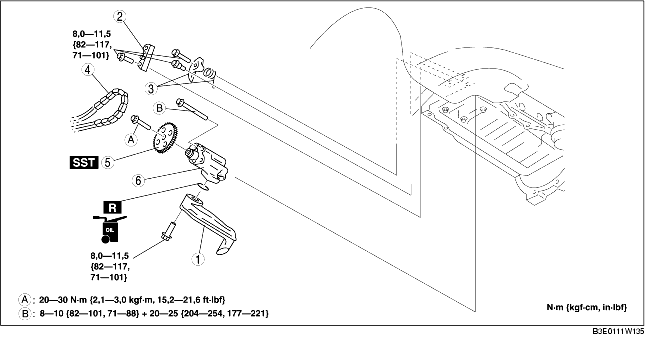

1. Déposer le couvercle de la batterie. (voir la section DEPOSE/REPOSE DE BATTERIE [LF].)
2. Débrancher le câble négatif de la batterie.
3. Déposer le cache inférieur et la bavette ensemble.
4. Déposer le pneu avant (droite).
5. Vidanger l'huile moteur. (voir la section REMPLACEMENT D'HUILE MOTEUR [LF].)
6. Déposer la plaque de trou de bougie. (voir la section DÉPOSE/REPOSE DE PLAQUE DE TROU DE BOUGIE [LF].)
7. Déposer la courroie de transmission. (voir la section REMPLACEMENT DE COURROIE DE TRANSMISSION [LF].)
8. Placer le réservoir de réserve de liquide de refroidissement à un endroit où il ne gêne aps.
9. Déposer le compresseur de climatiseur sans débrancher les tuyaux. (voir la section DEPOSE/REPOSE DE COMPRESSEUR DE CLIMATISATION [LF].)
10. Déposer la bobine d'allumage. (voir la section DEPOSE/REPOSE DE BOBINE D'ALLUMAGE [LF].)
11. Déposer la bougie d'allumage. (voir la section DEPOSE/REPOSE DE BOUGIE D'ALLUMAGE [LF].)
12. Placer le support de câble d'accélérateur à un endroit où il ne gêne pas.
13. Déposer le capteur de position de vilebrequin (CKP). (voir la section DEPOSE/REPOSE DE CAPTEUR DE POSITION DE VILEBREQUIN (CKP) [LF].)
14. Déposer le cache avant du moteur. (voir la section DEPOSE/REPOSE DE CHAINE DE DISTRIBUTION [LF].)
15. Déposer le carter d'huile. (voir la section DEPOSE/REPOSE DE CARTER D'HUILE [LF].)
16. Déposer les différents éléments selon l'ordre indiqué dans le tableau.
17. Pour la repose, suivre l'ordre inverse de la dépose.
18. Faire le plein d'huile moteur avec le type et la quantité d'huile moteur spécifiés. (voir la section REMPLACEMENT D'HUILE MOTEUR [LF].)
19. Démarrer le moteur et rechercher les fuites d'huile.
20. Inspecter le niveau d'huile. (voir la section INSPECTION DU NIVEAU D'HUILE MOTEUR [LF].)
21. Inspecter la distribution d'allumage et le régime de ralenti. (voir la section MISE AU POINT DU MOTEUR [LF].)

.
|
1
|
Crépine d'huile
|
|
2
|
Guide de chaîne de pompe à huile
|
|
3
|
Composant de ressort et tendeur de chaîne de pompe à huile
|
|
4
|
Chaîne de pompe à huile
|
|
5
|
Pignon de pompe à huile
(voir la section Note sur la dépose/repose de roue dentée de pompe à huile.)
|
|
6
|
Pompe à huile
(voir la section Note sur la repose de pompe à huile.)
|
1. Monter l'outil SST sur la roue dentée de pompe à huile afin d'empêcher la pompe à huile de tourner.
1. Serrer les boulons de la pompe à huile en deux étapes, selon l'ordre indiqué dans l'illustration.